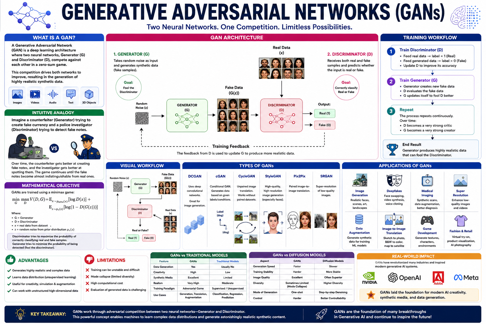
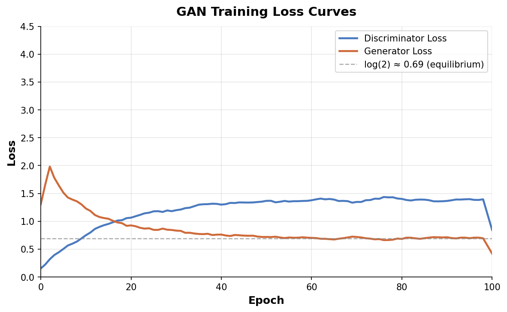
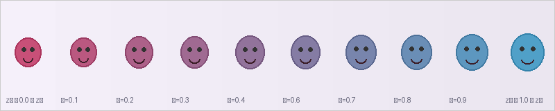

Generative Adversarial Networks (GANs) are a class of deep learning framework introduced by Ian Goodfellow and his colleagues in 2014. They consist of two neural networks — a Generator and a Discriminator — that compete against each other in a zero‑sum game. The Generator learns to produce realistic data (e.g., images, audio, text), while the Discriminator learns to distinguish real data from fake data produced by the Generator.
This adversarial process drives both networks to improve until the Generator creates outputs indistinguishable from real data, and the Discriminator can no longer tell them apart. GANs are foundational to generative AI and a core topic in the CGAI certification.
Why GANs Matter
Unsupervised generation – learn to generate data without explicit labels.
High‑fidelity outputs – produce photorealistic images, audio, and video.
Wide applications – image synthesis, super‑resolution, style transfer, data augmentation, drug discovery, and more.
Foundation for modern generative AI – concepts carry over to diffusion models, VAEs, and transformers.
Comparison: GANs vs Other Generative Models
Feature
GANs
VAEs
Diffusion Models
Training objective
Minimax game
ELBO maximisation
Denoising score matching
Sample quality
⭐⭐⭐⭐⭐ (Sharp)
⭐⭐⭐ (Blurry)
⭐⭐⭐⭐⭐ (State‑of‑art)
Mode coverage
Often low (mode collapse)
⭐⭐⭐⭐⭐
⭐⭐⭐⭐
Training stability
⚡ Challenging
✅ Stable
✅ Stable
Inference speed
⚡ Very fast (one‑shot)
⚡ Fast
🐢 Slow (many steps)
Latent space
✅ Structured
✅ Smooth
❌ Not explicit
Glossary — Key Terms
Generator (G)Network that creates fake samples from random noise.
Discriminator (D)Network that classifies real vs fake samples.
Adversarial TrainingG and D compete in a two‑player minimax game.
Latent SpaceLow‑dimensional random vector (z) that the generator maps to data.
Minimax LossObjective: G minimises log(1−D(G(z))), D maximises log D(x)+log(1−D(G(z))).
Mode CollapseGenerator produces limited varieties of outputs.
Nash EquilibriumOptimal point where G produces perfect data and D is 50% confident.
Vanishing GradientWhen D becomes too strong, G receives no useful gradient.
🔁 Pipeline & Process
The GAN training pipeline alternates between two phases — Discriminator update and Generator update — in a carefully orchestrated loop. Click each step below for an expanded explanation.
1
① Sample real data from the training set
A mini‑batch of real examples (e.g., real photographs) is drawn from the dataset. These serve as the ground‑truth that the discriminator learns to recognise. Example: 32 real face images from CelebA.
2
② Sample random latent vectors
A mini‑batch of random noise vectors (z) is sampled from a prior distribution (typically Gaussian). Each vector z ∈ ℝd is a seed that the Generator will transform into a fake sample. Example: 32 vectors of size 100 drawn from N(0, I).
3
③ Generate fake samples via Generator (forward pass)
The Generator G takes the noise vectors z and produces synthetic outputs G(z). Initially these look like random noise; over time they become realistic. Example: 32 fake face images of size 64×64×3.
4
④ Discriminator evaluates real + fake samples
The Discriminator D receives both real samples (x) and fabricated samples (G(z)). It outputs a probability D(·) ∈ [0,1] that the input is real. D aims to assign D(x) → 1 and D(G(z)) → 0.
5
⑤ Backpropagate through Discriminator & update D
The binary cross‑entropy loss is computed for the Discriminator: ℒD = −[log D(x) + log(1−D(G(z)))]. Gradients are backpropagated and D's weights are updated (often with several steps per G update).
6
⑥ Freeze D, backpropagate through Generator & update G
Generator loss: ℒG = −log D(G(z)) (or equivalently log(1−D(G(z)))). Gradients flow from D's output all the way back through D into G, updating G's weights to produce more realistic samples that fool D.
7
⑦ Repeat until convergence
Steps 1‑6 are repeated for many iterations. As training progresses, G becomes better at generating realistic data and D becomes better at detecting fakes. At the Nash equilibrium, D(G(z)) ≈ 0.5 — D cannot distinguish real from fake.
Worked Example: Generating Handwritten Digits
Dataset: MNIST (28×28 greyscale digits).
Latent dim: 100 (standard Gaussian).
Generator: MLP with layers [100 → 256 → 512 → 1024 → 784] + reshape to 28×28, using ReLU + batch norm + tanh output.
Training: Batch size 128, learning rate 2e‑4 (Adam optimiser). After ~25 epochs, G produces recognisable digits; after ~100 epochs, they are near‑indistinguishable from real digits.
⚙️ Core Mechanism — Adversarial Training
At the heart of every GAN lies a two‑player minimax game between the Generator (G) and the Discriminator (D). The value function V(D, G) is:
G tries to minimise this objective (make D(G(z)) → 1), while D tries to maximise it (D(x) → 1, D(G(z)) → 0). This push‑pull dynamic drives both networks to improve.
Interactive Demo: Adversarial Training Simulator
Use the sliders below to observe how the decision boundary and sample quality evolve as training progresses.
🟢 Real data (blue) · 🔴 Fake data (red) · Dashed line = Discriminator boundary
How to interpret the demo
Blue dots are real data points sampled from a 2‑D Gaussian mixture (representing the true data distribution).
Red dots are fake samples produced by the Generator — initially scattered, they converge toward real data clusters.
Dashed curve is the Discriminator's decision boundary: regions D(x) > 0.5 are classified as "real".
As the epoch increases, G learns to map latent noise into the data distribution, and D's boundary becomes less effective at separating real from fake.
🏗️ Architecture
GANs are composed of two independent neural networks connected in an adversarial loop. Below we break down the internal structure of each.
Generator Architecture
Layer
Input → Output
Remarks
Dense + BN + ReLU
z (100) → 256
Projects latent vector into higher dimension.
Dense + BN + ReLU
256 → 512
Expands representation.
Dense + BN + ReLU
512 → 1024
Further expansion.
Dense + Tanh
1024 → 784 (28×28)
Output layer; tanh constraints pixels to [−1, 1].
Reshape
784 → 28×28×1
Image format for compatibility with the discriminator.
Key design choices: Batch normalisation stabilises training; ReLU prevents vanishing gradients in G; tanh output centres data in [−1, 1], matching normalised inputs.
Key design choices: Leaky ReLU prevents gradient death; dropout prevents D from overfitting; sigmoid output gives a calibrated probability.
How They Connect
The two networks share no weights. During G updates, gradients propagate through D's frozen weights (the "trick" that allows G to learn). The diagram below illustrates the data flow:
┌──────────────┐ Real Images (x) ┌──────────────┐
│ Dataset │──────────────────────→│ │
└──────────────┘ │ │
│ Discriminator│──→ D(x) → 1 (real)
┌──────────────┐ Noise (z) ┌──────→│ (D) │
│ Latent Space │──────────────→│Generator│ │
│ (Gaussian) │ │ (G) │ │
└──────────────┘ │ └──────────────┘
│ ↑
└──G(z)────┘ D(G(z)) → 0 (fake)
Gradients flow back through D ──────────────────────→ (only when training G)
Concrete Example: DCGAN Architecture
A Deep Convolutional GAN (DCGAN) replaces dense layers with transposed convolutions in the Generator and regular convolutions in the Discriminator. Typical DCGAN for 64×64×3 images:
No single metric fully captures GAN quality (fidelity vs diversity).
FID, Inception Score (IS), Precision‑Recall curves, human evaluation.
Key Variants You Should Know
DCGAN – Introduced CNN layers; set standard architectural best practices.
WGAN / WGAN‑GP – Used Wasserstein distance + gradient penalty; much more stable training.
Conditional GAN (cGAN) – Provided class labels to both G and D; enabled controlled generation.
CycleGAN – Unpaired image‑to‑image translation with cycle‑consistency loss.
StyleGAN / StyleGAN2 – Style‑based generator with adaptive instance norm; state‑of‑art face synthesis.
BigGAN – Large‑scale GAN with class‑conditional batch norm; high‑fidelity ImageNet generation.
SRGAN – Super‑resolution GAN with perceptual loss; upscales low‑res images.
Exam Preparation Tips
✅ Be able to write the minimax objective function from memory.
✅ Understand why alternating training is necessary (not simultaneous update of both networks).
✅ Explain mode collapse with a concrete example (e.g., GAN trained on MNIST only ever generating the digit "1").
✅ Compare GANs to VAEs and Diffusion Models — know strengths and weaknesses of each.
✅ Know the WGAN loss and why the 1‑Lipschitz constraint matters (weight clipping vs gradient penalty).
✅ Be familiar with evaluation metrics: FID (Fréchet Inception Distance) measures feature‑space distance; Inception Score measures both quality and diversity.
✅ Understand the latent space — interpolations, vector arithmetic (e.g., "king − man + woman = queen").
Glossary — Advanced Terms
Wasserstein DistanceEarth‑Mover distance; provides smooth, meaningful gradients even when D is optimal.
Gradient PenaltyWGAN‑GP enforces 1‑Lipschitz by penalising gradient norm ≠ 1.
Spectral NormalisationNormalises weight matrices by largest singular value; stabilises D training.
FIDFréchet Inception Distance — lower is better; compares real & fake feature distributions.
Inception ScoreMeasures how confident D is about class labels of generated images (diversity + quality).
Latent InterpolationSmoothly varying z produces semantically smooth transitions in output space.
Cycle ConsistencyIf you translate X→Y→X, you should get back the original; used in CycleGAN.
Two‑Time‑Scale Update (TTUR)Using different learning rates for G and D; helps convergence.
📊 Diagrams & Visual References

Figure 1: Standard GAN Architecture. Random noise sampled from a latent space is fed into the Generator, which produces fake images. Both real images (from the dataset) and fake images are passed to the Discriminator, which learns to classify them. The feedback (loss) is used to fine‑tune both networks. Key takeaway: the Generator never sees real data directly — it learns entirely through the Discriminator's feedback.

Figure 2: Generator vs Discriminator Loss During Training. This hypothetical plot shows G loss (log(1−D(G(z)))) in orange and D loss (−[log D(x)+log(1−D(G(z)))]) in blue over training epochs. Early on, D quickly learns to reject fake samples, causing G loss to rise. As G improves, both losses converge toward log(2) ≈ 0.69 — the theoretical equilibrium where D(G(z)) = 0.5. Watch for oscillations: when one network improves too fast, the other's loss may spike, indicating instability.

Figure 3: Latent Space Interpolation. By smoothly interpolating between two latent vectors z₁ and z₂ (using spherical linear interpolation, slerp), the Generator produces a continuous morph between two output images. This demonstrates that the latent space is smooth and semantically meaningful — a key property of well‑trained GANs. The intermediate frames show meaningful blending of features (e.g., face shape, hair colour, expression).
Note: Figures 2 and 3 require additional image files (GAN_Training_Curves.png and GAN_Latent_Interpolation.png). Place them in the same folder as this HTML file for the diagrams to display. The diagram for Figure 1 (GAN.png) should already be present in the folder.
✅ Practice Quiz
Test your understanding of GANs with 10 questions. Choose the best answer for each.